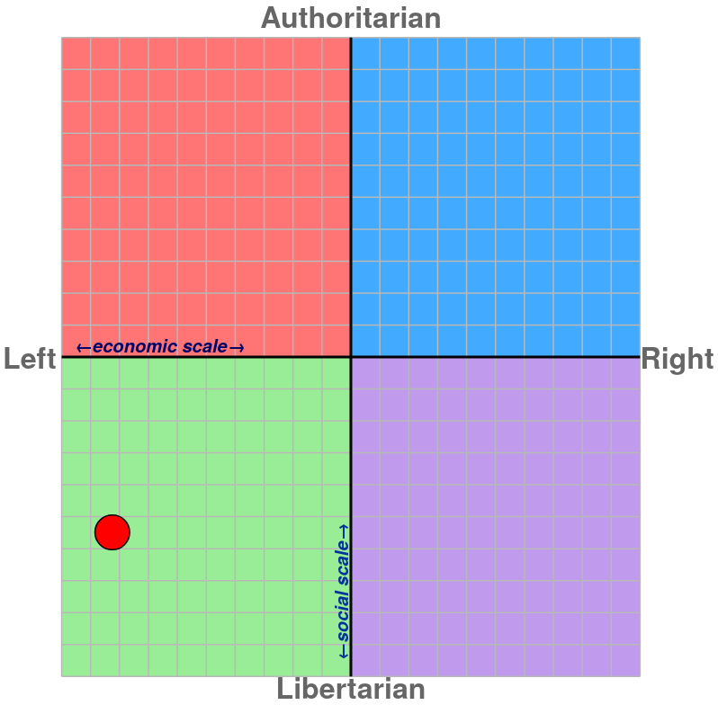

Hey there, I'm Riean (they/them). I am a FOSS enthusiast, tinkerer, and history nerd. I love engineering and how things are made.
Please refrain from using any of my older usernames or alternate personalities.

Mankind should be able to roam freely with zero restrictions if the individual is not a convicted criminal with a serious crime. The current system is a blatant racist mess designed to divide people and forbid freedoms that nonhumans enjoy. Freedom of movement is a fundamental human right based on Article 12.
Individuals under the legal adult age are controlled, manipulated, locked up and abused by so-called authority figures on a daily basis. They are denied their most basic human rights under the guise of so-called child rights.
People who believe it is appropriate to treat minors as property and deny them privacy, autonomy, and their most basic rights are anything but just or moral.
MDNI & other tools such as Age-Verification systems are designed to enable arbitrary discrimination and isolation. As such, these systems must be fought against and destroyed.
Fight Compulsory Schooling/Education. Incarceration for the crime of being born is a violation of every single human right.
Parents and so-called legal guardians do not know what's best, and as such, they should not hold as much power as they currently do.
Compulsory military service for youth is a form of social control based on the idea of being indebted to the state for being born there; this is anything but just. An individual cannot be indebted to the state for being born in it and as such holds no obligation to it. It is, however, the state that is indebted to the individual, as it cannot exist without its people and cannot survive without the youth. Compulsory military service is also suicide when used in actual warfare.
Child/Children's rights are essentially code for refusing someone their most basic human rights and providing them a stripped-down version that leaves them under the mercy of the guardian & state. All human beings are entitled to the same rights and freedoms regardless of age, sex, race, intelligence, identity, etc.
Youth Liberation is no different from the civil rights movement and is an important part of it that cannot be separated.
Throughout history religion has only served to cause and justify unnecessary suffering and bloodshed.
Mankind has always been troubled by 2 things: their mortality and injustice. As such, it is no wonder why every single religion deals with these two topics. Mankind wants something to exist after leaving the realm of the living and wants not only justice but also a reward for one's positive actions; it is no surprise that every religion has some form of Heaven and Hell, a place where you are rewarded and a place where you are punished.
Despite this, religion has never served to help mankind with what they are troubled by. Instead, religion has only worsened the fear and caused the most abhorrent and unjustifiable suffering and bloodshed, then proceeded to justify it with some religions solely being based on creating that suffering and bloodshed.
I don't use these often, primarily because I prefer working with a desktop. However, these are the laptops I use most often.
All my computers run some form of Linux, usually of the Arch Linux flavor, because it provides me with the most control possible with the least amount of work. I also actively avoid modern Intel CPUs for my systems and primarily use ASUS motherboards in my builds due to their simple and unbloated firmware and reliability from personal experience.
I usually run a completely stock Gnome desktop as Gnome is the best and those who disagree fail to understand what a desktop should be. However Xfce was the first desktop that I loved and will always hold a special place in my heart
Interns of other software and System components, I prefer using Clover for my bootloader over GNU Grub or godforbid systemd-boot; Doas over Sudo and Bash for my shell. I am also a big fan of Cloudflare Warp and Mozilla Firefox.
Yes! However, please contact me on matrix and inform me first of your intention to do so. @rieanthecatboy:matrix.org
This is in case I'd rather not be associated with you.
Button is just a standard 88x31